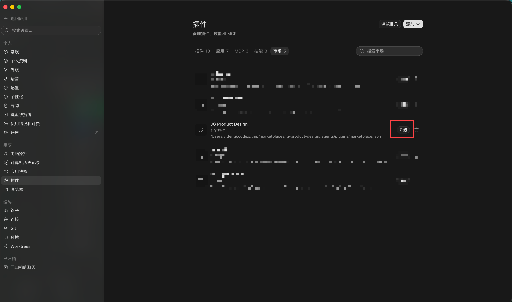

1
操作前准备
首次安装只需要准备一个仓库地址。Git 引用固定填写 main，稀疏路径留空。
首次安装
添加市场，再安装插件
日常更新
先升级市场，再刷新插件
生效方式
更新完成后新建任务
- 更新本地源码 只修改维护仓库
- 推送 GitHub GitHub 作为发布源
- Codex 拉取 升级市场并安装新版
- 新建任务 验证新版 skill
来源
https://github.com/yideng-xl/jg-product-design-plugin-codex
Git 引用
main
稀疏路径
留空
截图中的本地路径由 Codex 自动管理。
.codex/.tmp/marketplaces/... 是 Codex 从 GitHub 拉取的市场快照；插件随后自动安装到 Codex 统一插件目录。两处都不是维护仓库，不需要手工复制或修改文件。
首次安装
下面的操作只在第一次使用时执行。已经添加过 JG Product Design 市场的电脑，直接看“日常更新”。
2
3
4
安装插件
返回插件页面，在 JG Product Design 下找到 JG Product Design Codex，点击“安装”。安装完成后新建一个 Codex 任务。
首次安装完成标准
市场列表中能看到 JG Product Design；插件页面中 JG Product Design Codex 显示为已安装。
安装后验证
安装完成后新建任务，输入下面这句话：
我们来聊个新需求- Codex 先建议使用
requirements2prd。 - 得到你的确认后，再进入需求梳理流程。
- 如果旧任务没有变化，以新建任务的结果为准。
日常更新
仓库发布新版本后，按“升级市场 → 刷新插件 → 新建任务”的顺序操作。
1
升级插件市场
进入“设置”→“插件”→“市场”，找到 JG Product Design，点击右侧“升级”。Codex 会从 GitHub 拉取最新市场内容，不需要手工复制文件。

2
刷新插件本体
返回插件页面，找到 JG Product Design Codex。页面出现“升级”时点击升级；没有升级入口但新版能力未生效时，重新安装一次。Codex 会把新版安装到统一插件目录。
只升级市场不等于插件本体已经更新。市场升级后，仍要确认插件已刷新。
3
新建任务验证
插件刷新完成后新建任务，再验证本次新增或调整的能力。已经打开的旧任务可能仍使用更新前的 skill。
命令行备用方式
界面中无法完成升级时，可在终端依次执行：
codex plugin marketplace upgrade jg-product-design
codex plugin add jg-product-design-plugin-codex@jg-product-design执行完成后，新建 Codex 任务验证。
PROTOTYPE EDITOR
原型编辑器
用于在浏览器里直接修改需求便签和原型说明。改动自动写入原型自己的 data/annotations.js。
Mac 和 Windows 共用一个压缩包
需要先安装 Node.js。编辑器由本仓库发布和维护。
下载原型编辑器
- 启动编辑器 Mac 打开 App；Windows 双击 VBS
- 选择原型目录 目录中需要包含 index.html
- 打开编辑态 在页面右下角打开“编辑态”
- 修改后关闭 内容自动写回，页面关闭后服务停止
macOS 第一次打不开
右键点击“原型编辑器.app”，选择“打开”。系统确认一次后即可正常双击。
页面没有“编辑态”
确认页面地址以 localhost:47821 开头。直接双击 HTML 或访问发布站时，页面按只读方式打开。
只保留 1 份编辑器。
macOS 建议把 App 放进“应用程序”。编辑器不要复制到各个原型目录。
异常处理
先根据现象核对下面四项。
提示市场已存在
不要重复添加。回到市场列表，找到 JG Product Design 并点击“升级”。
添加市场失败
核对仓库地址是否完整、Git 引用是否为 main、稀疏路径是否留空，并确认当前网络能访问 GitHub。
看不到新版能力
先升级市场，再刷新或重新安装插件，最后新建任务。不要只在原任务中反复测试。
插件列表里找不到
确认市场列表中已有 JG Product Design。必要时先升级市场，再返回插件页搜索。